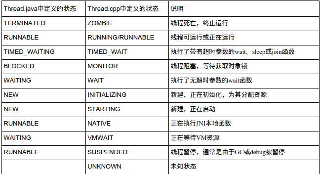

背景
最近项目组需要实现捕获ANR并上传到公司服务器相关的功能，因此花了点时间来整理相关的知识，并从AMS源码与腾讯Bugly-SDK中逆向找到相关思路，在此分享给大家。
ANR是什么？
Application Not Responding的缩写，即应用程序无响应。简单来说，就是应用跑着跑着，突然duang~，界面卡住了，无法响应用户的操作如触摸事件等。
触发ANR的原因
应用进程自身引起
例如：
1.主线程阻塞、挂起、死循环
2.应用进程的其他线程的CPU占用率高，使得主线程无法抢占到CPU时间片其他进程间接引起（误伤）
例如：
1.当前应用进程进行进程间通信请求其他进程，其他进程的操作长时间没有反馈
2.其他进程的CPU占用率极高，使得当前应用进程无法抢占到CPU时间片
ANR的分类：
- 应用在5秒内未响应用户的输入事件，如按键或触摸事件
- BroadcastReceiver未在10秒内完成相关的处理
- Service的各个生命周期函数时20秒内没有执行完毕
主要还是以上3种情况，其根本原因都是主线程被阻塞导致的。
Tips:
其中2,3属于Background ANR，实际上已经发生了ANR，但不会进行对话框弹出。可以在Android开发者选项—>高级—>显示所有”应用程序无响应“，勾选后即可对后台ANR也进行弹框显示。
问题分解
要实现捕获ANR功能，简单来说，需要解决以下问题：
- 获取什么信息？
- 去哪里获取？
- 什么时候去获取？
对于上述问题，我们一步一步来，逐个解决。
一、获取什么信息？
1. Cause reason:
当ANR产生的时候，logcat会打印出一段log，会输出类似下面的信息。
1) 首先可以得到ANR所在进程的进程名、进程号、及出错的组件；
2) 其中Reason主要描述了ANR产生的具体原因/分类；
3) CPU usage...ago则主要记录了ANR发生前CPU的使用状况；
4) CPU usage...later则记录了ANR发生之后CPU的使用状况。
结合此部分信息进行分析可以初步得出产生ANR的基本原因，以及排除是否属于误伤。什么意思呢？也就是说如果发现ANR前后有某个进程在占用大量CPU，那么ANR的产生很可能是误伤-_-|||，具体可以回看上面关于ANR触发原因一节。
2. ANR traces
在知道了Cause reason之后，需要进一步的信息来确定ANR在代码中的位置，这个时候就要去查看traces文件了。每次产生ANR之后，系统都会向/data/anr/traces.txt中写入新的数据。内容大概如下：
1）介于----- pid 0000 xxx -----与----- end 0000 -----之间的为进程0000的所有线程堆栈信息。一般来说，发生ANR的进程信息会在文件头部，下面AMS源码分析的时候会说明为什么。
2) "main" prio=5 tid=1 TIMED_WAIT分为为线程名、线程优先级（默认值5）、线程ID、线程状态；主线程之后会接着打印进程中其他线程的信息，此处不再贴出。
Tips:
关于ANR traces的保存时长：
traces.txt：只保留最近一次发生ANR时的信息，位置：/data/anr/traces.txt
DropBox： Android 2.2 开始增加, 会保留历史上发生的所有ANR的logs，位置：/data/system/dropbox，保存时长3天。详见：ActivityManagerService.addErrorToDropBox()相关源码：
ActivityManagerService.java
DropBoxManagerService.java
SystemServer.java
3. 关于线程状态
了解线程的状态对分析traces文件至关重要，下表列出了各线程的状态及含义：

Read The Fucking Source Code
在解释后面的两个问题：2.去哪里获取？3.什么时候去获取？之前，我们需要简单的阅读下ActivityManagerService的源码了。
1) 在产生ANR的时候，会回调到AMS的appNotResponding()方法，以下为关键代码，中文注释为相关代码的解读：
2) 我们来详细看下dumpStackTraces()这个方法，此处将dump出firstPids与lastPids进程的相关线程堆栈信息至traces.txt，中文注释为相关代码的解读。
二、去哪里获取？
1. Cause reason:
- 关于reason信息的获取，到目前为止，我们只知道能在logcat中能检索到相关信息，难道要开个线程不断循环去检测logs？这想法看来还是Too Young Too Simple。
- 这里先说下结论，可通过
ActivityManagerService.getProcessesInErrorState()方法获取进程的ANR信息，此方法是通过逆向Bugly时发现的，后面会讲到。 - 此方法会遍历mLruProcesses，并根据进程目前的异常状态如crash或者anr类型，返回具体的ProcessErrorStateInfo，具体看代码，比较简单：12345678910111213141516171819202122232425262728293031323334353637public List<ActivityManager.ProcessErrorStateInfo> getProcessesInErrorState() {...synchronized (this) {// iterate across all processesfor (int i=mLruProcesses.size()-1; i>=0; i--) {ProcessRecord app = mLruProcesses.get(i);if (!allUsers && app.userId != userId) {continue;}if ((app.thread != null) && (app.crashing || app.notResponding)) {// This one's in trouble, so we'll generate a report for it// crashes are higher priority (in case there's a crash *and* an anr)ActivityManager.ProcessErrorStateInfo report = null;if (app.crashing) {report = app.crashingReport;} else if (app.notResponding) {report = app.notRespondingReport;}if (report != null) {if (errList == null) {errList = new ArrayList<ActivityManager.ProcessErrorStateInfo>(1);}errList.add(report);} else {Slog.w(TAG, "Missing app error report, app = " + app.processName +" crashing = " + app.crashing +" notResponding = " + app.notResponding);}}}}return errList;}
注意app.notRespondingReport非空的时候才会返回，那它是什么时候初始化的呢？是在makeAppNotRespondingLocked()方法中。其中此方法又是在appNotResponding()中被调用的（在所有进程写完traces.txt之后，可回看上面AMS相关代码）
2. ANR traces
这部分内容获取比较简单，直接读取/data/anr/traces.txt里面第一个进程的信息即可，能保证首个进程即是当前ANR的进程，至于为什么上面分析AMS源码中已经说明了，当前进的pid会首先被add进firstPids中被优先输出。此处的难点是如何从traces中过滤出相关的信息，如进程名，进程pid，生成时间，各线程名、tid、优先级、状态、堆栈信息等。这里就要用到强大的正则表达式来进行过滤了，此处忽略一万字…（大家可以反编译Bugly的SDK，参考里面的正则表达式）
三、什么时候去获取？
在上面AMS的源码分析中，我们可以关注到dumpStackTraces()方法中的FileObserver，系统通过该类监听文件/data/anr/traces.txt来达到顺序依次写入各个进程的traces信息。按照这个思路，当ANR发生的时候，我们也可以通过监听该文件的写入情况来判断是否发生了ANR，看起来这是一个不错的时机。需要注意的一点是，所有应用发生ANR的时候都会进行回调，因此需要做一些过滤与判断，如包名、进程号等。
在实现前，我们先来看看Bugly中是如何实现的。这里笔者反编译的是Bugly-v1.2.8版本，搜索关键字FileObserver，果不其然很快发现了一些相关代码，位于com.tencent.bugly.crashreport.crash.anr包下的b.class：
上面这段代码比较简单，就是一个启动monitor的方法，监听/data/anr/这个目录，并过滤包含trace的文件名。在FileObserver创建的时候可以传入一个mask参数，8正是代表着CLOSE_WRITE这个常量，当有写入并且close的时候将会回调，跟AMS中的使用基本吻合。
继续翻看b.class的代码，当过滤出trace文件的时候，会执行b.this.a(var3)这个方法。从代码逻辑上可以看出，这是一个对trace文件有效性判断的方法，精简过后的代码如下：
上面这段代码的意思也比较好理解，先解析出时间，对一些重复的回调或太频繁的ANR进行过滤（为什么会重复回调，因为上面阅读AMS源码的时候也说明了，firstPids中各个进程的信息会依次写入trace文件中）。然后对进程异常状态和进程号进行判断，过滤掉无效或其他应用的回调，最后对有效的trace进行处理。
这个时候ProcessErrorStateInfo这个类引起了我的注意，我们继续翻代码看他到底获取的是什么信息，进入this.a(this.g, 10000L)这个方法：
可以把这段代码copy到自己的项目中跑一下，首先通过ActivityManager.getProcessesInErrorState()来获取系统中有所有异常进程的信息，通过condition来过滤出目标进程，而2正是代表着NOT_RESPONDING这个常量，即ANR异常。而ProcessErrorStateInfo中的shortMsg和longMsg变量正是我们之前在logcat中看到的Cause reason！
可以看到，其实Bugly对于ANR的触发时机监听也正是使用FileObserver来实现的。而且之前一直在思考logcat中的Cause reason是从哪里获取的现在也有了答案，反编译有些时候还真是个好法宝，嘿嘿嘿~
总结
至此，通过AMS源码分析和Bugly-SDK的逆向，我们终于解决了捕获ANR异常最重要的3个问题：1.获取什么信息？2.去哪里获取？3.什么时候去获取？希望这篇文章能给正在开发相关功能的同学们一些指导，顺便分享下自己的思路与经验~
参考
https://developer.android.com/training/articles/perf-anr.html#anr
http://gityuan.com/2016/07/02/android-anr/
http://blog.csdn.net/tencent_bugly/article/details/46650675